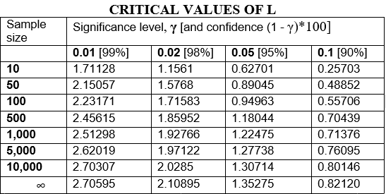

The goal of LREP is to estimate the Parameters for the Pareto Distribution and test Pareto vs. Exponential Distributions
Installation
You can install the released version of LREP from CRAN with:
install.packages("LREP")And the development version from GitHub with:
# install.packages("devtools")
devtools::install_github("jiqiaingwu/LREP")Introduction
Our test is a likelihood ratio test of the following hypotheses:
Ho: data comes from an exponential distribution, versus the alternative
H1: data comes from a Pareto distribution.
The approach is to consider the ratio of the maxima of the likelihoods of the observed sample under the Pareto or exponential (in the numerator) and exponential (in the denominator) models. The logarithm (natural) of the likelihood ratio, the L statistic, is:
Where is the observed sample of excesses and
and
are the likelihood functions of the sample under Pareto and exponential models, respectively.
We use a Pareto distribution with the survival function and exponential distribution with the survival function
. To compute L, both likelihoods are maximized first (via maximum likelihood estimates, MLEs, of the parameters), and then the natural logarithm of their ratio is taken as the likelihood ratio statistic. Panorska et al. (2007) provide the necessary theoretical results for the implementation of the numerical routines necessary for the computation of L. The properties of the test, proofs and more details on the optimization process appear separately in Kozubowski et al.(2007)
The percentiles of L provide the critical numbers for our test on the significance level
. The test is one-sided and we reject the null hypothesis if the computed value of the test statistic exceeds the critical number. We have computed some common percentiles for the distribution of L under the null hypothesis for different sample sizes and for the limiting case. The percentiles for finite sample sizes were computed via Monte Carlo simulation with 10,000 samples of a given size from the exponential distribution (Table below).

Example
This is a basic example which shows you how to solve a common problem:
library(LREP)
###example when data is Exponential
####################################
x<-rexp(1000,0.000000000005)
1/mean(x)
#> [1] 5.110435e-12
sigmaalphaLREP(x,10^-12)
#> s.hat a.hat log.like.ratio
#> [1,] 32117491 0.1232811 0
expparetotest(x,0.05)
#> s.hat a.hat log.like.ratio
#> [1,] 32117491 0.1232811 0
#> Critical value: 2.446109
#> Deviance statistic: 0
#> Data is comming from an exponential distribution
##asymptotic p-value
1/2*(1-pchisq(0,df=1))
#> [1] 0.5
x<-rexp(1000,0.1)
1/mean(x)
#> [1] 0.0998123
sigmaalphaLREP(x,10^-12)
#> s.hat a.hat log.like.ratio
#> [1,] 11260.69 1124.955 0.0008769159
expparetotest(x,0.05)
#> s.hat a.hat log.like.ratio
#> [1,] 11260.69 1124.955 0.0008769159
#> Critical value: 2.446109
#> Deviance statistic: 0.0008769159
#> Data is comming from an exponential distribution
##asymptotic p-value
1/2*(1-pchisq(1.596044,df=1))
#> [1] 0.1032324
###example when data is Pareto
####################################
pareto.generation<- function(s,a,n)
{
u<-runif(n)
x<-s*((1-u)^(-1/a)-1)
x
}
x<-pareto.generation(10,7,1000)
sigmaalphaLREP(x,10^-12)
#> s.hat a.hat log.like.ratio
#> [1,] 14.23286 8.5751 13.76893
expparetotest(x,0.05)
#> s.hat a.hat log.like.ratio
#> [1,] 14.23286 8.5751 13.76893
#> Critical value: 2.446109
#> Deviance statistic: 13.76893
#> Data is comming from Pareto distribution
##asymptotic p-value
1/2*(1-pchisq(14.43144,df=1))
#> [1] 7.267762e-05